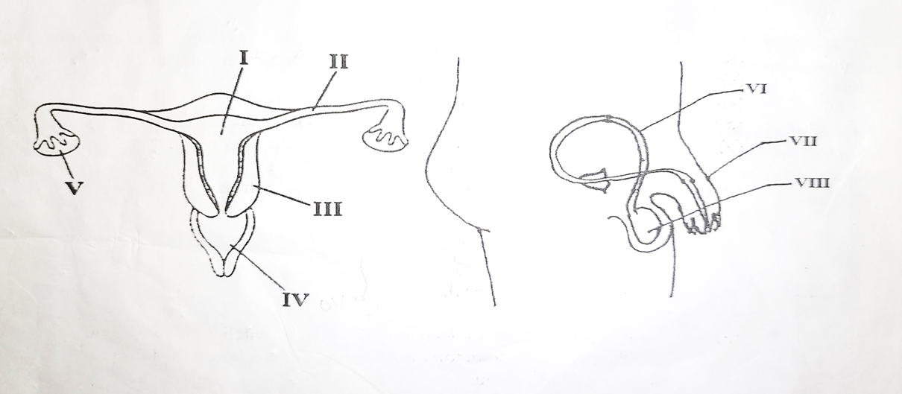
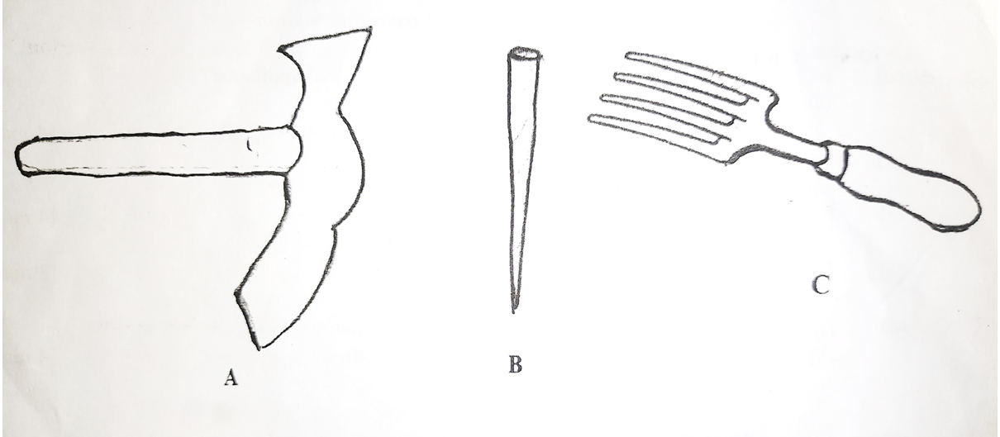

BECE
Year to Practice:
1990
1991
1992
1993
1994
1995
1996
1997
1998
1999
2000
2001
2002A
2002B
2003
2004
2005
2006
2007
2008
2009
2010
2011
2012
2013
2014
2015
2016
2017
2018
2019
2020
2021
2022
2023
2024
Science BECE: 2023
Time yourself to improve on your speed. You are to use not more than 45 minutes for this section.
Click on the link below when you are ready.
Kindly contact the administrator on 0208711375 for the link to the test.
This paper is in two sections: A and B. Answer Question 1 in section A and any other four questions in section B.
You have 1\(\frac{1}{4}\) hours.
NOTE: Time yourself to improve on your speed.
(40 MARKS)
Answer all of Question 1.
Question 1
-
The diagrams below are illustrations of the male and female reproductive systems for humans.
Study them carefully and answer the questions that follow.

\((i)\) Name each of the parts labelled I, II, V, VI, VII and VIII.
\((ii)\) State the function of each of the parts labelled III, IV and VII.
\((iii)\) Name the labelled part where each of the following processes take place:
\(\hspace{0.5cm}\)\((\alpha)\) Fertilization;
\(\hspace{0.5cm}\)\((\beta)\) Production of sperms;
\(\hspace{0.5cm}\)\((\gamma)\) Ovulation.
Name two common infectious diseases that affect both the male and female reproductive system.
-
The diagrams below are illustrations of different devices used in the farm.
Study them carefully and answer the questions that follow.

\((i)\) Give a common name for the devices illustrated.
\((ii)\) Name each of the devices labelled A, B and C.
\((iii)\) State one use of each of the devices named in \((ii)\).
\((iv)\) State two effects of the use of the device C on the soil.
\((v)\) State two ways of prolonging the usefulness of the device labelled A.
-
\((i)\) Draw the symbols for each of the following electronic components:
\(\hspace{0.4cm}\)\((\alpha)\) Resistor;
\(\hspace{0.4cm}\)\((\beta)\) (p-n junction) diode;
\(\hspace{0.4cm}\)\((\gamma)\) Cell
\(\hspace{0.4cm}\)\((\delta)\) Light Emitting Diode / LED.
\((ii)\) Use the symbols drawn in \((i)\) together with a switch to draw a circuit diagram to demonstrate forward biasing of (p-n junction) diode and the light emitting diode.
\((iii)\) State the effect of the resistor on the (p-n junction) diode and the light emitting diode when the circuit is closed.
-
The following activities were carried out in the laboratory.
Study them carefully and answer the questions that follow.
I. 10 g of iodated salt was added to 150 ml of water in a beaker. The mixture was stirred thoroughly.
II. Vegetable oil was added to a quantity of water in a corked flask and shaken vigorously then allowed to stand for some time.
III. Few grams of grinded charcoal was added to water in a beaker and stirred vigorously and then allowed to stand.
\((i)\) State what will be observed in each of the activities I, II and III.
\((ii)\) Suggest an aim for the experiment.
\((iii)\) State one difference between what is observed in I and II.
\((iv)\) State a method of separation for the activity carried out in II.
(60 MARKS)
Answer four question only from this section.
Question 2
-
\((i)\) What is the importance of a fuse in an electrical appliance?
\((ii)\) State two household appliances that have fuse.
-
\((i)\) What is teenage pregnancy?
\((ii)\) State two causes of teenage pregnacy.
-
State three precautions against hazards.
-
\((i)\) State two practices that destroy water bodies.
\((ii)\) Give two methods of conserving water bodies.
Question 3
-
\((i)\) What is aerobic respiration?
\((ii)\) State the main difference between aerobic respiration and anaerobic respiration.
-
\((i)\) Explain the term potential difference.
\((ii)\) The potential difference across the terminals of a \(100\ \Omega\) resistor is 250 V. Calculate the current flowing through the resistor.
-
\((i)\) Which crop is infected by the Swollen Shoot disease?
\((ii)\) State the causative organism of the disease.
\((iii)\) State the method of spread of the disease.
\((iv)\) Give two ways of preventing the spread of the disease.
-
Consider the given elements: \( {}^7_3 X \) and \( {}^{20}_9 Y \)
\((i)\) Write the electron configuration for Y;
\((ii)\) State the possible ion that could be formed by X to make it more stable.
Question 4
-
What is a neutralization reaction?
- State three physical properties of soil.
-
\((i)\) Define the term power.
\((ii)\) If a machine hauls a packing case of mass 50 kg up a building that is 10 m high in 30 s, calculate the power of the machine.
[g = 10 m\(s^{-2}\)] - State four areas where technology is used for the benefit of humans.
Question 5
-
State three ways in which mulching restores soil resources.
-
\((i)\) Name the two elements that can combine to form ammonia gas.
\((ii)\) Write a balanced chemical equation for the formation of ammonia from the elements named in \((i)\).
-
The following information is on the feeding habits of some organisation:
\((i)\) man feeds on grasscutter;
\((ii)\) toad feeds on grasshopper;
\((iii)\) snake feeds on toad;
\((iv)\) goat feeds on grass
\((v)\) man feeds on hawk;
\((vi)\) grasshopper feeds on grass;
\((vii)\) hawks feeds on snake;
\((viii)\) grasscutter feeds on grass.
-
\((i)\) What is a galaxy?
\((ii)\) State the relationship between stars and galaxies.
\((iii)\) Explain briefly the term milky way.
Use all the information given above to construct a food web.
Question 6
-
\((i)\) State three effects of soil erosion on the growth of crop plants.
\((ii)\) Mention one method of controlling soil erosion.
-
\((i)\) Name two science related businesses.
\((ii)\) State the princinples underlying the operation of each of the businesses named in \((i)\)
-
\((i)\) Explain how the female Anopheles mosquito transmits malaria to humans.
\((ii)\) State one chemical method of controlling mosquitoes.
-
\((i)\) Name two fundamental units of measurement.
\((ii)\) State the physical quantity that one of the units named in \((i)\) measures.
For sponsorship or advertisement kindly call or whatsapp on 0208711375 or 0249969740.